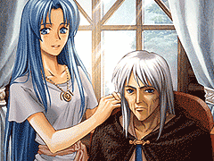

目次 > ゲームについて > 日本Falcom 攻略 > Ys > 攻略チャート > ダームの塔まで
らんの眼
Ys(イース) Ys Eternal(VE)/Ys Complete
| 概要 | 情報 | ボス戦 |
| 敵キャラ一覧 | アイテム一覧 | 攻略チャート |
| 地図 | ダウンロード | イースの本 |
| 経験値表 | 地名一覧 | タイムアタック |
| ETERNAL / Complete 比較 | キャラクター一覧 | |
| Ys 攻略へ | 目次へ戻る |
| [ ～サルモン神殿 ] [ ～廃坑 ] [ ～ダームの塔 ] [ ～ダームの塔14 階 ] [ ～エンディング ] |
| SILVER SWORD 入手まで |
| 廃坑 第一層で「SILVER ARMER」、「TIMER RING」を入手 廃坑 第二層で「HEAL RING」、「ロダの実」、「銀のハーモニカ」を入手 ミネアの町へ移動 ミネアの町の城壁へ行き、レアに「銀のハーモニカ」を返す レアとのイベント ゼピック村側にあるロダの樹へ行き、ロダの樹とのイベント(Complete では「ロダの果」を食べる必要があります) ロダの樹から「SILVER SWORD」を授かる |
| (サブイベント) 「ロダの実」を入手後、ミネアの町の「オーマンの酒場」にいる「筋肉質の男」に話しかけると、ちょっとしたイベントが見られる レアに「銀のハーモニカ」を返した後、彼女の目の前で「紙切れ」を使うと、ちょっとしたイベントが見られる レアに「銀のハーモニカ」を返した後、ゼピック村へ行くと、フィーナとのイベントが見られる |
| ダームの塔へ行くまで |
| ラスティン廃坑へ移動 廃坑 第三層で、「ダームの鍵」を入手 廃坑 第三層にある扉を「ダームの鍵」を使って開き、廃坑 最奥へ移動 廃坑 最奥でヴァジュリオン戦 「イースの本」を入手 ゼピック村へ移動し、持っている「イースの本」を全てジェバに読んでもらう  盗賊の砦へ移動し、ゴーバンに話しかける ダームの塔へ移動 |
| (サブイベント) ダームの塔へ入る前に、「ウィング」を持っていると、ちょっとしたイベントが見られる |
| [ ～サルモン神殿 ] [ ～廃坑 ] [ ～ダームの塔 ] [ ～ダームの塔14 階 ] [ ～エンディング ] |
| 概要 | 情報 | ボス戦 |
| 敵キャラ一覧 | アイテム一覧 | 攻略チャート |
| 地図 | ダウンロード | イースの本 |
| 経験値表 | 地名一覧 | タイムアタック |
| ETERNAL / Complete 比較 | キャラクター一覧 | |
| ページ上部へ | Ys 攻略へ | 目次へ戻る |